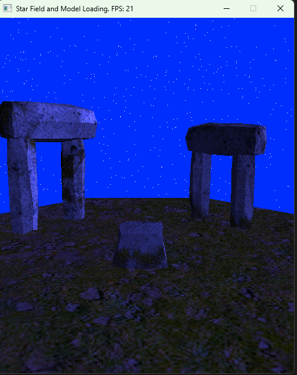

Custom RasterSurface renderer: vertex transforms, depth buffer and per-pixel lighting.
This assignment taught how to use a RasterSurface to render and light a 3D object from first principles. Work included implementing vertex transforms (model, view, projection), triangle assembly and rasterization, depth buffering, barycentric interpolation for per-pixel attributes (positions, normals, UVs), and a basic per-pixel lighting model (ambient + diffuse + specular). The renderer also handles camera transforms, simple texture lookup, and clamping the final color output to the surface. The goal was to understand the full software rasterization pipeline and how shading, depth testing, and interpolation combine to produce a lit 3D image.